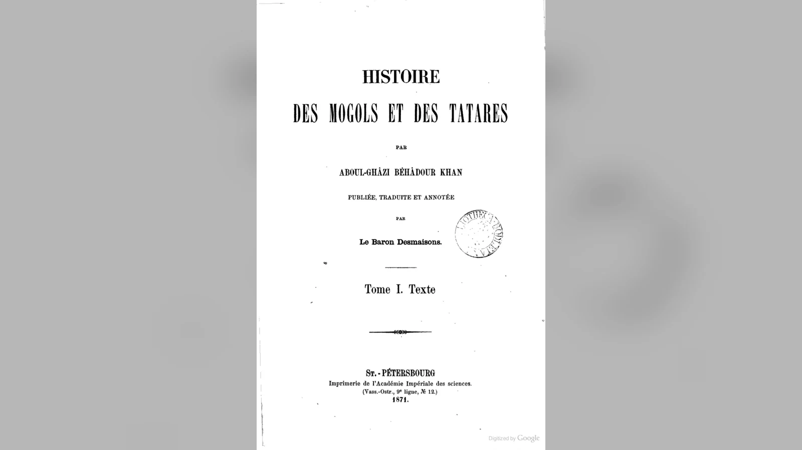
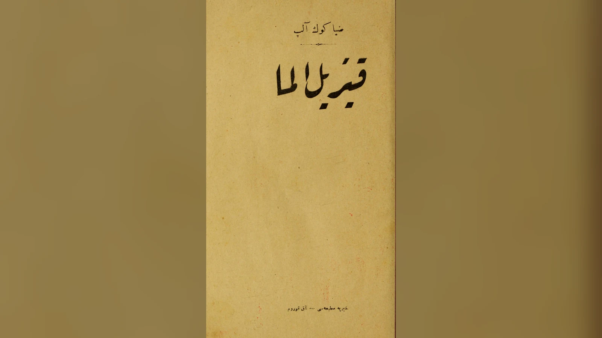

Dağlarla çevrili bir yurt, ilk kuşak için kurtuluş, torunları için aşılması gereken bir sınırdır. Yenilgiden kaçan iki çift burada hayat kurar; sürüleri büyür, çocukları yeni ailelere dönüşür. Sonunda vadinin dışındaki dünyaya dönmek isterler, fakat çıkış yolu bulamazlar. Ergenekon anlatısının en çok hatırlanan sahnesi böyle başlar: Bir demircinin gösterdiği demirli dağ kesiminde odun ve kömür yığılır, körükler birlikte çalıştırılır ve topluluğa geçit açılır.
Ergenekon Destanı, ağır bir yenilgiden sonra varlığını koruyan bir soyun çoğalmasını ve ata yurduna dönmesini anlatan köken ve kurtuluş hikâyesidir. Türkiye’de Türk destanları arasında yer alır; yeniden doğuşun, ortak çabanın ve özgürlüğün simgesi olarak tanınır. Bununla birlikte önemli erken yazılı kaydı, 14. yüzyıl başında Reşîdüddin’in Moğol soylarını anlattığı Câmiʿu’t-tevârîh eserindedir. Türk kültüründeki yeri ile bu yazılı bağlam, hikâyenin farklı tarihsel katmanlarını oluşturur.
Demir dağın açılması, bozkurdun yol göstermesi ve Göktürklerin kuruluşu, günümüzde çoğu zaman tek bir özet içinde birleşir. Eski metinlere yaklaşıldığında ise bunların aynı kaynaktan gelmediği görülür. Destanın canlılığını koruyarak bu ayrımları yapmak, hem hikâyenin ne anlattığını hem de neden farklı kuşaklar tarafından yeniden benimsendiğini anlamayı sağlar. Başlıktaki “gerçek anlamı” da gizlenmiş bir sır değil; sığınma, devamlılık ve yeniden kuruluş arasındaki bu ilişkidir.
Ergenekon Destanı özeti: Yenilgiden dağın açılmasına
Hikâyenin olaylarını en rahat izleyebildiğimiz anlatımlardan biri, Ebülgazi Bahadır Han’ın Şecere-i Türkündedir. Aşağıdaki özet bu sürümün çizgisini izler. Burada başlangıçtaki hükümdar İl Han, karşısındaki düşman ise Tatar hükümdarı Sevinç Han’dır. Adı, çevirilerde Süyünç gibi farklı biçimlerde de yazılır. İl Han’ın orduları önceki mücadelelerde üstün gelmiştir; düşmanları doğrudan savaşarak sonuç alamayınca başka boylarla birleşir ve bir hile hazırlar. Metnin “Moğol” ve “Tatar” diye adlandırdığı taraflar, efsanevi bir soy geçmişinin kişileri ve topluluklarıdır.
İki ordu günlerce savaşır. Sevinç Han’ın tarafı, bazı eşyaları ve hayvanları geride bırakarak kaçıyormuş gibi davranır. İl Han’ın adamları bu geri çekilmeyi düşmanın gücünün tükendiği şeklinde yorumlar ve peşlerine düşer. Ardından kaçan ordu geri dönüp saldırır; üstünlüğün tersine döndüğü savaşta İl Han’ın topluluğu ağır yenilgiye uğrar. Anlatı, yetişkinlerin öldürülmesini, küçüklerin esir edilmesini ve esirlerin başka boyların adları altında yaşamak zorunda kalmasını aktarır. Soyun kaybolma tehlikesi böylece yalnız insanların ölümüyle değil, topluluğun adının silinmesiyle de açıklanır.
İl Han’ın en küçük oğlu Kıyan ile hükümdarın küçük kardeşinin oğlu Nüküz sağ kalır. Ebülgazi’nin bu anlatımında ikisi aynı yıl evlenmiştir ve eşleriyle birlikte esaretten kurtulurlar. Savaştan on gün sonra gece kaçıp eski konaklama yerine dönerler; yağmadan arta kalan hayvanları bulurlar. Böylece yeni hayatın başlangıcında dört insanın yanında sürüler de vardır. At, deve, sığır ve koyun gibi hayvanlar, yolculuğun yükünü taşımaya ve sonraki yaşamı sürdürmeye yarar. Kurtulanlar bütün çevreyi düşmanlarla dolu gördükleri için başka bir boya katılmayı güvenli bulmaz.
Dağlara yönelerek insanların kullandığı yollardan uzak bir sığınak ararlar. Ebülgazi’nin anlatısında yabani koyunların açtığı dar bir izi takip eder, yüksek bir geçidi aşarak karşı yamaçtan inerler. Yol o kadar tehlikelidir ki bir hayvanın yanlış basması uçuruma düşmesine yol açabilir. Arkalarında bıraktıkları geniş bozkırın aksine buraya ulaşmak zordur; korunmalarını sağlayan da bu zorluktur. Vadide ise akarsular, kaynaklar, otlaklar, meyve ağaçları ve av hayvanları bulunur. Ergenekon, kıtlık içinde beklenen bir hapishane olarak başlamaz; dışarıdaki tehlikeye karşı yaşanabilir bir yurt olur.
Kışın sürülerden elde edilen et ve deri, yazın süt, topluluğun hayatını sürdürmesini sağlar. Bu ayrıntı destanı sadece savaş ve kurtuluş sahnelerinden ibaret olmaktan çıkarır. Hayatta kalmak, günlük geçimin devamına bağlıdır. Dağların içinde yeni bir düzen kurulur; çocuklar doğar, aileler çoğalır, sürüler genişler. Metin Kıyan’ın soyunu Kıyat adıyla, Nüküz’ün soyunu ise Nüküzler ve Dürlügin gibi adlarla ilişkilendirir. Böylece ilk kaçış, sonraki boyların neden birbirine akraba sayıldığını açıklayan bir başlangıca dönüşür.
Ergenekon’da geçen süre, yaygın özetlerde dört yüz yıldır. Ebülgazi’nin Desmaisons tarafından yayımlanan Fransızca çevirisinde önce dört yüz yılı aşan bir kalıştan, dönüşün sonunda ise dört buçuk asırdan söz edilir. Bu farklı ifadeleri kullanarak kesin bir kuruluş tarihi hesaplamak mümkün değildir. Anlatıda sürenin temel işlevi, birkaç kişinin hayatını çok sayıda kuşağın geçmişine dönüştürmektir. Çıkışı gerçekleştirenler Kıyan ve Nüküz’ün kendileri değil, uzun süre sonra çoğalmış torunlarıdır.
Artık insanlar ve sürüler vadiye sığmayınca topluluk bir araya gelir. Büyüklerinden duydukları eski yurdu hatırlarlar; dağların dışında atalarının yaşadığı geniş bir ülke bulunduğunu bilirler. İlk kaçanlar için öncelik saklanmakken, onların torunları kendilerini dışarıdaki düşmanlarla karşılaşabilecek kadar güçlü görür. Buna rağmen güçlenmek tek başına çıkış sağlamaz. Yollar aranır, fakat geçit bulunamaz. Hikâye, savaşabilecek insan sayısının artmasıyla çözülemeyen bir engeli, başka türden bir uzmanlığın önüne getirir.
Bir demirci, dağın belirli bir yerinde demirli bir tabaka bulunduğunu ve burası açılabilirse yol yapılabileceğini söyler. Önerilen yer incelenir; halktan odun ve kömür toplanır, bunlar dağın yarığına ve çevresine yığılır. Deriden yetmiş büyük körük hazırlanıp farklı noktalara kurulur. Ateş yakıldıktan sonra körükler birlikte çalıştırılır. Destanın dünyasında ateş demiri eritir ve yüklü bir devenin geçebileceği kadar yol açılır. Dolayısıyla tanınan sürüm, bütün bir dağ sırasının ortadan kaldırılmasını değil, çıkış için yeterli dar bir geçidin oluşmasını anlatır.
Topluluk geçitten çıktığında başındaki hükümdar, Kıyan soyundan Börte Çine’dir. Çevredeki boylara haber gönderilir; bazıları dostluk gösterir, Tatarlarla ise yeniden savaşılır. Bu kez Ergenekon’dan çıkanlar üstün gelir ve ata yurduna yerleşir. Eski metnin sonu, yalnız özgürlüğe kavuşmanın değil, kaybedilmiş üstünlüğün geri alınmasının da hikâyesidir. İlk yenilgideki öldürme ve esaret, son zaferde düşmanlara yöneltilir. Bu sert son, modern kısa anlatılarda çoğu zaman geri planda kalır; oysa soy tarihinin nasıl bir zafer anlayışı taşıdığını gösterir.
Çıkış günü ayrıca anılır. Ebülgazi, hanın kızgın demiri maşa ile örse koyup çekiçle dövdüğünü, ardından beylerin aynı hareketi yaptığını anlatır. Dağın açılmasını mümkün kılan iş, törenin merkezine yerleşmiştir. Olay örgüsü böylece yenilgi, sığınma, çoğalma ve dönüşle tamamlanırken, anma töreni geçmişteki kurtuluşu sonraki kuşakların hayatına bağlar. Bugünkü anlatılarda görülen yol gösterici kurt ise bu özetin zorunlu bir sahnesi değildir; onun yeri başka köken rivayetleriyle karşılaştırıldığında açıklık kazanır.
Ergenekon hangi kaynakta geçer?
Ergenekon anlatısının tarihini araştırırken en önemli başlangıç noktası, İlhanlı devlet adamı ve tarihçisi Reşîdüddin Fazlullah’ın XIV. yüzyıl başlarında hazırladığı Câmiʿu’t-tevârîh adlı eserdir. Farsça yazılmış bu büyük tarih derlemesi, Moğol hanedanının geçmişini ve başka toplumların tarihlerini bir araya getirir. Eserin ilk bölümlerinde hükümdar soylarının kökenini açıklayan rivayetler de bulunur. Ergenekon, burada modern bir ulus tarihinin başlığı altında değil, Moğolların kökeni ve soy silsilesiyle ilgili anlatı dünyasında karşımıza çıkar.
Reşîdüddin’in konumu metnin niteliğini anlamak açısından önemlidir. O, anlattığı efsanevi çağın görgü tanığı değildi; İlhanlı sarayının siyasal ve kültürel çevresinde farklı sözlü ve yazılı gelenekleri derleyen bir tarihçiydi. Câmiʿu’t-tevârîh’in hazırlanmasında Moğol tarih geleneğine ilişkin bilgiler, saray çevresindeki aktarım kanalları ve dönemin çeşitli kayıtları rol oynadı. Bu sayede eser, kendi çağında dolaşan köken rivayetlerini öğrenmemize yardım eder. Fakat bir rivayetin XIV. yüzyılda yazıya geçirilmesi, içindeki olayın aynı biçimde yüzyıllar önce yaşandığını göstermez.
Anlatının diğer temel tanığı, XVII. yüzyılda Hive’de hüküm süren Ebülgazi Bahadır Han’ın Şecere-i Türk adlı eseridir. Ebülgazi bir tarihçi hükümdar olarak soy kütüklerini, hanedan geçmişini ve destansı rivayetleri Türkçe kaleme aldı. Eserinin başlangıç bölümlerinde Reşîdüddin’den yararlandığı bilinir. Dolayısıyla iki eserde benzer bir hikâye bulunması, otomatik olarak birbirinden bağımsız iki eski sözlü tanığın aynı olayı doğruladığı anlamına gelmez. İkinci metnin önceki yazılı gelenekten ne ölçüde beslendiği hesaba katılmalıdır.
Ebülgazi’nin Şecere-i Türkü, aynı yazarın Şecere-i Terâkime adlı kitabından farklıdır. Şecere-i Terâkime, Türkmen soy anlatıları ve Oğuz geleneği açısından öne çıkar; Şecere-i Türk ise daha geniş hanedan ve soy tarihini işler. İki kitabın benzer adları, sonraki özetlerde zaman zaman Ergenekon’un hangi eserde bulunduğunun karıştırılmasına yol açar.
Ebülgazi’nin metnini okuyabildiğimiz baskılardan biri, Baron Desmaisons’ın 1871’de özgün metni, 1874’te Fransızca çeviriyi yayımladığı iki ciltlik çalışmadır. Çeviride Ergenekon anlatısı, İl Han’ın hükümdarlığından boyların kökenlerini açıklayan bölüme geçerken yer alır. Başlıktaki “şecere”, yani soy kütüğü, kitabın düzenini açıklar: Hikâye kendi başına bir macera olarak bırakılmaz, sonraki boy ve hükümdarların geçmişine bağlanır. Bu yerleşim, destanın ilk yazılı tanıklarında neden kahramanların kişisel duygularından çok soy ilişkilerinin anlatıldığını anlamayı kolaylaştırır.

Türk destanı mı, Moğol anlatısı mı?
Ergenekon’un kime ait olduğu sorusunun kolay bir cevabı varmış gibi görünür. Türkiye’deki okul kitapları ve popüler yayınlar onu çoğunlukla Türk destanları arasında sayar. Buna karşılık en önemli erken yazılı tanıklık, Moğol köken ve soy anlatıları bağlamında yer alır. Bu iki olgudan birini yok saymak yerine aralarındaki tarihsel ilişkiyi incelemek gerekir. Çünkü Orta Asya’da Türk ve Moğol topluluklarının siyasi, dilsel ve kültürel temasları uzun bir geçmişe sahiptir.
Reşîdüddin’in eserindeki soy anlatıları, Cengiz Han hanedanının geçmişini anlamlandıran bir dünya içinde aktarılır. Hanedan tarihi yazımında köken rivayetleri, soyun nereden geldiğini açıklamak kadar yönetme hakkına da tarihsel derinlik kazandırır. Ergenekon’un bir sığınma ve çıkış hikâyesi olarak bu bağlama yerleşmesi tesadüfi değildir. Soyun felaketten sonra yeniden çoğalması, sonraki büyük siyasi oluşum için güçlü bir başlangıç anlatısı sağlar.
Bununla birlikte ortaçağ kaynaklarının kullandığı Türk, Moğol ve Tatar gibi adlar, bugünkü milliyet kategorileriyle bire bir örtüşmez. Bazı tarihçiler Ergenekon’un Türk-Moğol ortak kültür çevresinde gelişmiş unsurlar taşıdığını, bazıları ise erken Türk köken efsaneleriyle benzerliklerin daha eski bir Türk anlatı katmanına işaret ettiğini savunur. Bu tartışmada belirleyici mesele, motif benzerliğinin doğrudan metin aktarımını ne ölçüde kanıtlayabildiğidir. Ortak bir motifin bulunması, iki hikâyenin bütün ayrıntılarıyla aynı metin olduğunu göstermez.
Şükrü Özdemir ve Abdullah Temizkan’ın 2024 tarihli çalışması, tam da bu Türk-Moğol ortak geleneği meselesini ve Reşîdüddin’in anlatısının nasıl yorumlandığını tartışır. Araştırmacılar demircilik motifi ve Cengiz Han çevresindeki gelenekler üzerinden bağlantılar önerir. Bu yaklaşım, kaynakların farklı tarihsel katmanları arasında ilişki kurmaya yönelik bir akademik yorumdur; üzerinde herkesin uzlaştığı kesin bir köken hükmü olarak sunulmamalıdır.
Türkiye’de Ergenekon’un Türk kültürünün parçası olması ise ayrı ve belgelenebilir bir tarihsel gelişmedir. Bir anlatı, yazıya geçirildiği ilk bağlamın dışında yeni bir edebî ve kültürel hayat kazanabilir. Toplumlar destanları yeniden anlatırken bazı unsurları öne çıkarır, bazılarını değiştirir ve kendi geçmişleriyle ilişkilendirir. Bu, kültürel belleğin çalışma biçimlerinden biridir. Dolayısıyla Ergenekon’un Türk edebiyatındaki yerini kabul etmek, Reşîdüddin’in metninin Moğol soy tarihi bağlamını gizlemeyi gerektirmez.
Ergenekon ve Bozkurt Destanı aynı hikâye mi?
Bozkurtla ilgili erken Türk köken anlatıları, Ergenekon tartışmasının en önemli karşılaştırma alanıdır. Çin tarih kaynaklarında, özellikle Aşina soyu ve Göktürklerin kökeni çevresinde, bir çocuğun büyük bir felaketten sağ kurtulması ve dişi kurtla bağlantılı bir soyun doğması gibi motifler yer alır. Bu anlatılar da yenilgi, hayatta kalma ve yeniden türeme temalarını işler. Benzerlik dikkat çekicidir; fakat olayların kuruluşu Ergenekon’un demirli dağdan çıkış hikâyesiyle aynı değildir.
Çin kaynaklarındaki anlatıların merkezinde kurtla soy arasındaki ilişki bulunur. Rivayetlerden birinde ağır yaralanmış bir çocuk dişi kurdun yardımıyla yaşar; kurt daha sonra dağdaki bir mağaraya sığınır ve soyun devamını sağlayan oğullar doğurur. Golden’ın karşılaştırdığı anlatılarda kurt hem koruyucu hem ata işlevi taşır. Buradaki doğum ve türeme, Ergenekon’da iki insan çiftinin kuşaklar boyunca çoğalmasından farklı kurulmuştur. Ergenekon’un Reşîdüddin ve Ebülgazi üzerinden tanınan çekirdeğinde ise dağlarla çevrili sığınak, kuşaklar boyunca çoğalma ve demirli geçidin açılması öne çıkar. Birinde hayvan atanın doğurduğu soy, ötekinde sığınıp çoğalan ailelerin dönüşü anlatılır.
Bugün çok bilinen sürümlerde bir bozkurdun Ergenekon’dan çıkanlara yol gösterdiği anlatılır. Bu sahne Türk mitolojik sembolizmi içinde anlaşılır görünse de her erken Ergenekon tanığının zorunlu parçası olarak kabul edilemez. Bozkurtun yol göstericiliğiyle dağın eritilmesini aynı anlatıda buluşturan popüler biçimler, çeşitli köken efsanelerinin ve modern edebî düzenlemelerin birbirine yaklaşmasının ürünüdür.
Asena adı, bu ayrımın sık karıştırılan bir başka tarafıdır. Aşina, Çin kaynaklarının Türk hanedanı için kaydettiği soy adıyla ilişkilidir; modern Türkçede Asena biçimi yaygınlaşmıştır. Bu adın geçtiği köken anlatıları ile Ergenekon’daki Kıyan ve Nüküz çevresindeki soy çizgisi aynı metin içinde doğrudan özdeş kabul edilmemelidir. Adların ses benzerliği veya kültürel yakınlığı, kişiler arasında tarihsel bir akrabalık kurmaya yetmez.
Bu karşılaştırma, eski bozkır dünyasında neden benzer hikâyelerin dolaşabildiğini de düşündürür. Siyasi birlikler dağıldığında soyun devamı, yeni bir hanedanın doğuşu ve dışarıdan gelen tehditlere karşı korunma önemli meselelerdi. Köken anlatıları bu kaygıları sembollerle işler. Kurt, dağ, demir ve sığınak farklı metinlerde benzer sorunlara cevap veren motifler olabilir. Yine de bu ortak işlev, bütün rivayetlerin başlangıçta tek bir destanın bölümleri olduğu sonucunu zorunlu kılmaz.
Göktürklerle kurulan bağda tarihler de ayrılmalıdır. Göktürk kağanlıklarının tarihsel çerçevesi 6.–8. yüzyıllardır; Reşîdüddin’in derlemesi ise 14. yüzyıl başındadır. Peter B. Golden’ın köken rivayetlerini incelediği araştırması, Zhou shu, Sui shu ve Bei shi gibi Çin hanedan tarihlerinin Aşina soyu çevresinde farklı anlatılar kaydettiğini gösterir. Bunlar tek bir kayıp Türkçe destanın değişmeden çevrilmiş nüshaları gibi ele alınamaz. Kurt atası, korunmuş çocuk ve dağ içindeki yaşam, karşılaştırılabilecek ortak unsurlardır; demirli geçidin açıldığı Ergenekon anlatısının bütün sahneleriyle aynı olduklarını göstermez.
Orhun yazıtları da bu karşılaştırmada ayrı bir tanıktır. Kül Tigin ve Bilge Kağan anıtları, devletin kaybını, yeniden toparlanmasını ve hükümdarın topluluğa karşı sorumluluğunu anlatır; fakat Ergenekon’un Kıyan, Nüküz ve yetmiş körüklü çıkış hikâyesini kaydetmez. Yazıtlardaki yeniden kuruluş ile destandaki dönüş arasında tematik bir yakınlık kurulabilir. Yakınlık, bir metnin ötekini doğruladığı anlamına gelmez. Eski Türklerin kutsallık ve hükümdarlık düşüncesini doğrudan yazıtlar üzerinden izlemek için Tengri ve Gök Tanrı inancı ayrı bir devam okuması sunar.

Demir dağı eritmek ne anlama gelir?
Ergenekon’un en güçlü görüntüsü, aşılmaz bir dağın demirci ustalığıyla açılmasıdır. Burada demir, gündelik bir eşya malzemesi olmanın ötesinde anlatının çözüm aracıdır. Dağların koruduğu fakat aynı zamanda hapsettiği topluluk, kendi becerisi sayesinde çıkış yolu bulur. Bu nedenle sahnede topluluğun sahip olduğu bilgi ve emek belirgin bir yer tutar. Ateşin etkisi ile demircinin önerisi, halkın birlikte çalıştığı uzun bir hazırlık içinde buluşur.
Bozkır toplumlarında demirin önemi tarihsel olarak anlaşılabilir. At koşumlarından silahlara, gündelik araçlardan üretim gereçlerine kadar metal işçiliği geniş bir kullanım alanına sahipti. Demirciler, zor işlenen malzemeyi kullanılabilir nesnelere dönüştüren uzmanlardı. Demirin ateş ve körükle işlenmesi, bu beceriyi görsel olarak da etkileyici kılar. Efsanede dağın aşılmasına yardım eden unsurun demircilik olması, teknolojik uzmanlığın toplumsal hafızada nasıl anlam kazanabileceğini düşündürür.
Yine de anlatıyı tarihsel bir maden işletmesinin raporu gibi okumak mümkün değildir. Dağın bütünüyle eritilmesi ifadesi, gerçek dünyadaki metalürjik süreçleri açıklamak için verilmiş teknik talimat değildir. Kaynaklarda demirli bir bölümün açılmasıyla ilgili anlatı, mitolojik ölçekte bir engelin aşılmasıdır. Bundan hareketle belirli bir tarihte belirli bir dağın gerçekten eritildiğini, hangi fırınların kullanıldığını veya kaç kişinin çalıştığını çıkarmak kanıtların sınırını aşar.
Ebülgazi’nin sahnesinde çözümü bulan demirci ile uygulamaya katılan topluluk birbirini tamamlar. Demirci engelin malzemesini tanır; halk odun ve kömür toplar, körükler hazırlanır, ateş aynı anda beslenir. Uzmanlık olmadan kalabalık ne yapacağını bilemez, ortak çalışma olmadan uzmanlığın önerisi uygulanamaz. Anlatının kurduğu bu ilişki, demirin soyut bir güç sembolü olmasından daha somuttur. Çıkış, doğru malzemeyi tanımanın ve işi birlikte yürütmenin sonucudur.
Geçidin yüklü bir devenin geçebileceği genişlikte açılması da dikkate değer bir ayrıntıdır. Topluluk yalnız insanları dışarı çıkarmaya çalışmaz; yaşamını sürdürdüğü eşyaları ve hayvanları da yeni yurda taşıyabileceği bir yol ister. Vadideki geçim düzeni, dönüş sırasında bir anda terk edilen gereksiz yük değildir. Böyle okunduğunda demir dağı sahnesi, kendi hayatını koruyarak başka bir alana geçebilmenin hikâyesi olur. Bu yorum, metindeki sürü, yük ve geçit ayrıntılarına dayanır.
Fransızca çevirinin anlatımında ateşin demiri eritmesi Tanrı’nın kudretiyle de ilişkilendirilir. Bu ifade, sahneyi eski Türk inancının hiçbir değişikliğe uğramamış kaydı gibi okumanın güçlüğünü gösterir: Elimizdeki metin Müslüman bir hükümdarın tarih yazımıdır. İnsan emeği ile kutsal yardım, onun anlatı dünyasında birbirini dışlayan açıklamalar değildir. Bu yüzden demirciliği tek başına modern bir akılcılık bildirisi, ateşi de otomatik olarak belirli bir eski dinin töreni saymak yerine, sahnenin kendi dilini izlemek daha açıklayıcıdır.
Ergenekon’un anlamı: Soy, sığınak ve yeniden kuruluş
Ergenekon çoğunlukla yeniden doğuş ve özgürlük sembolü olarak anlatılır. Bu yorum, hikâyenin güçlü bir yönünü yakalar; ancak bütün olay örgüsünü iki kelimeye indirger. Destan önce bir felaketle başlar. Hayatta kalanların azlığı, soyun devamının ne kadar kırılgan olduğunu gösterir. Sonra güvenli bir sığınak bulunur. Burada geçen uzun zaman, bir siyasi topluluğun tek kuşağın hayatıyla sınırlı olmadığını vurgular. Son olarak sığınağın terk edilmesi, korunmuş olan soyun yeniden geniş dünyaya katılması anlamına gelir.
Bu üç aşama birbirine bağlıdır. Yenilgi olmasa sığınma ihtiyacı doğmaz; sığınak olmasa soyun devamı tehlikeye girer; çoğalma olmasa çıkış ihtiyacı aynı biçimde ortaya çıkmaz. Dağın açılması bu nedenle bağımsız bir kahramanlık gösterisi değildir. Daha önceki kuşakların hayatta kalma çabasının yeni bir aşamasını tamamlar. Hikâyenin akılda kalıcı gücü, bir felaketin sonuçlarını zaman içinde tersine çevirmesinden kaynaklanır.
Anlatıda tek bir kahramanın kişisel zaferinden çok ortak devamlılık öne çıkar. İlk kurtulanlar, sonraki kuşakların hayatını mümkün kılar; çıkışı gerçekleştirenler de atalarının koruduğu soyu yeni koşullara taşır. Bu bakımdan Ergenekon, topluluğun kendisini geçmişteki bir kesintiyle nasıl ilişkilendirdiğini gösteren bir soy anlatısıdır. Soyun sürmesi, siyasi topluluğun sürekliliği için sembolik bir dayanak oluşturabilir.
Kapalı vadiyi yalnızca esaret mekânı saymak da hikâyenin ilk yarısını eksik bırakır. Vadi önce korunmayı sağlar. Daha sonra sınırlayıcı hâle gelir. Aynı mekânın iki farklı işlev üstlenmesi, anlatının en incelikli taraflarından biridir. Koruyucu düzenlerin zamanla değişen ihtiyaçları karşılayamaz hâle gelmesi, modern okur için güçlü bir benzetme sunabilir.
Aynı olay örgüsü, farklı çağlarda değişen beklentilere karşılık verebilir. Eski soy tarihinde devamlılık ve hükümdarlık hakkı önem kazanırken modern edebiyatta yeniden diriliş ve ortak yurt düşüncesi öne çıkar. Bu değişim, eski metnin silinmesi anlamına gelmez; aynı sığınak ve çıkış sahnesinin başka topluluk ihtiyaçları içinde yeniden okunmasıdır. Destanın kalıcı tarafı, geçmişi tek bir olayda dondurmasından çok, yeni başlangıçları anlatmaya elverişli oluşudur.
Ergenekon adı ne anlama gelir?
Ebülgazi’nin Desmaisons çevirisinde ad iki parça üzerinden açıklanır: Ergene dağ kuşağı ya da dağ kemeriyle, kon ise sarp ve dik oluşla ilişkilendirilir. Bu açıklama, sığınılan yerin dışarıdan ulaşılması güç konumuna uygundur. Günümüzde görülen Ergene Kon, Erkenekon ve Ergenekon gibi yazımlar, farklı aktarımların izlerini taşır. Sözcüğe verilen eski açıklama ile adın hangi dilden, hangi ses değişimleriyle geldiğini araştıran modern etimoloji aynı işlem değildir; birincisi anlatıcının mekânı nasıl anlamlandırdığını da gösterir.
Adın öykü içindeki işlevi, yalnız coğrafi bir özellik bildirmekten daha geniştir. Ergenekon, ilk ailelerin yerleştiği alanı ve sonraki boyların ortak geçmişini aynı yerde toplar. Çıkış sırasında hatırlanan ata yurdu ise bu sığınağın dışındadır. Böylece hikâyede iki yurt vardır: Kaybedilmiş eski ülke ve soyun yeniden büyüdüğü korunaklı alan. Bunları birbirine karıştırmak, dönüşün neden bu kadar önemli olduğunu gözden kaçırır. Ergenekon’da yaşamak devamı sağlar; oradan çıkmak geçmişte kaybedilmiş dünyayla yeniden bağ kurar.
Bu ayrıntı, destanı yalnız “Türklerin ilk ortaya çıktığı yer” cümlesiyle özetlemenin neden yetersiz olduğunu da gösterir. Seçilen sürümde sığınağa girmeden önce zaten bir topluluk, hükümdar ve yurt bulunmaktadır. Yeniden başlayan şey ilk insan hayatı değil, yenilgiyle kesintiye uğramış bir soyun siyasi varlığıdır. Dağların içindeki çoğalma, eski yurt ile sonraki egemenlik arasında bir köprü kurar. Ergenekon adı bu bakımdan bütün geçmişin başlangıcından çok, felaketin ardından sürekliliğin korunabildiği alanı işaret eder.
Ergenekon nerede? Altaylar ve sığınak coğrafyası
Destanda dağlarla çevrili bir sığınma yerinin bulunması, okuyucuda doğal olarak coğrafi bir merak uyandırır. Ergenekon’un hangi vadide olduğu sorusuna çeşitli bölgeler önerilmiştir. Ancak bugün belirli bir vadiyi bütün kaynaklar ve araştırmacılar tarafından kabul edilmiş Ergenekon olarak göstermek mümkün değildir. Anlatının adını ve tasvirini gerçek bir haritaya doğrudan aktarmak için yeterli bağımsız kanıt bulunmaz.
Bir yerin destanda geçmesiyle modern coğrafyada kesin olarak tanımlanabilmesi ayrı meselelerdir. Eski metinlerdeki yer adları farklı dillerde ve yazı geleneklerinde değişik biçimlerde kaydedilebilir. Sözcüklerin anlamına ilişkin açıklamalar da her zaman modern dilbilimsel etimolojiyle aynı değildir. Reşîdüddin ve sonraki kaynaklarda Ergenekon adına verilen açıklamalar, anlatıcıların adı nasıl anladığını göstermesi bakımından değerlidir; fakat bu açıklamalar tek başına belirli bir koordinatı doğrulamaz.
Altay çevresi, dağlık arazi ve eski Türklerin metal işçiliğiyle bağlantısı nedeniyle Ergenekon’un coğrafyası tartışılırken sık gündeme gelir. Özdemir ve Temizkan, dar bir vadiyi kesin biçimde işaretlemek yerine Altayların güneydoğusundaki geniş sahayı anlatının olası tarihsel çevresi olarak yorumlar. Bu, destanın metninden elde edilmiş bir koordinat değil, coğrafya ve tarih bilgisiyle kurulmuş bir öneridir. Bu tür öneriler, yer adları, göç yolları ve tarihsel çevre bilgisiyle desteklendiği ölçüde incelenebilir.
Ergenekon, Nevruz ve demir dövme geleneği
Ergenekon’un törenlerle ilişkisi, günümüz kutlamalarından daha eski yazılı tanıklara uzanır. Ebülgazi’nin metninde çıkışın ayının, gününün ve saatinin hatırlandığı söylenir; ardından han ile beylerin kızgın demiri örste dövmesi anlatılır. Bu, yalnız dağın eritildiği bir hikâye değil, kurtuluşun tekrar edilen bir hareketle anıldığı bir gelenektir. Ancak bu pasaj modern takvimde açıkça 21 Mart tarihini vermez. Çıkışın anılması ile bugünkü Nevruz tarihini aynı şey saymadan önce metnin kullandığı takvim çerçevesini ayırmak gerekir.
Günümüzde Ergenekon’dan çıkış, baharın ve yeniden başlangıcın simgesi olarak Nevruz kutlamalarıyla ilişkilendirilir. Örs üzerinde demir dövülmesi, destandaki engelin aşılmasını kısa ve anlaşılır bir hareketle görünür kılar. Bir kitabın uzun anlatısı, tören sırasında birkaç araçla hatırlanır: demir, ateş, örs ve çekiç. Bu bakımdan ritüelin gücü, herkese ayrıntılı bir soy tarihi öğretmesinden çok, ortak bir başlangıç düşüncesi etrafında insanları bir araya getirmesindedir.
Nevruz’un geçmişi ise Ergenekon’dan daha geniş bir kültür alanına aittir. İran, Orta Asya ve çevre bölgelerde farklı halklar baharın gelişiyle yeni yılı kutlar; bayramın adı, sofrası, oyunları ve törenleri yerel geleneklere göre değişir. UNESCO da Nevruz’u Asya ve Orta Doğu’da paylaşılan yaşayan miras olarak ele alır. Bu çeşitlilik, her kutlamayı tek bir destanın türevi saymayı güçleştirir. Ergenekon’un Türk kültüründeki Nevruz yorumuna katkısı ile bayramın bütün halklardaki kökeni ayrı konulardır.
Bahar ile vadi dışına çıkış arasındaki bağ, sembolik bakımdan anlaşılabilir. Doğanın yeniden canlanması ile uzun bir kapanmanın ardından yeni bir hayat kurulması, ortak bir yenilenme dili oluşturur. Buradan destanın ilk kez belirli bir bahar törenini açıklamak için yaratıldığını çıkarmak ise daha ileri bir yorum olur. Zeynep Seleme Alfeel ve Aynur Koçak’ın çalışması, bu bağlantıyı takvim miti ve karşıt unsurların birleşmesi üzerinden çözümler. Bu yaklaşım, anlatının sembollerini açıklayan bir halkbilimi yorumudur; olayın gerçekleştiği günü saptayan tarih belgesi değildir.
Bugünkü demir dövme sahnesini değerlendirirken iki farklı süreklilik görülebilir. Demircilik ve çıkışın anılması eski metinde bulunur; günümüz törenlerinin düzeni, katılımcıları ve millî vurguları ise kendi döneminin ihtiyaçlarıyla şekillenir. Bir geleneğin yeni bağlamlarda yeniden düzenlenmesi, kültürel değerini ortadan kaldırmaz. Ergenekon’un kalıcılığı biraz da yazılı soy hikâyesinden şiire, okul anlatısına ve bayram törenine geçerken hatırlanabilir unsurlarını korumasından kaynaklanır.
Ergenekon modern Türk edebiyatında nasıl yeniden anlatıldı?
Ergenekon’un bugün Türkiye’de bilinen biçimini anlamak için geç Osmanlı ve erken Cumhuriyet dönemindeki edebî yeniden anlatımlara bakmak gerekir. XIX. yüzyılda Türk tarihi ve dili üzerine ilginin artması, eski soy anlatılarının yeni okur çevrelerine ulaşmasını sağladı. Ahmed Vefik Paşa’nın Şecere-i Türk çevirisi, 1863–1864’te Tasvîr-i Efkâr gazetesinde kitap sayfası biçiminde tefrika edildi. Çeviri bütün eseri kapsamadı; dokuz bölümün ilk üç bölümünden yayımlanabilen kısmıyla kaldı. Buna rağmen Osmanlı okuruna Orta Asya’nın soy rivayetlerini ve Cengiz Han çevresindeki geçmişi tanıtan önemli bir halka oldu. Anlatının yeni okuyuculara ulaşması, yalnız tarih kitaplarının çoğalmasıyla değil, gazetenin sunduğu düzenli yayın imkânıyla da bağlantılıydı.
XX. yüzyıl başında Ziya Gökalp’in Ergenekon temalı şiiri, hikâyenin modern Türk edebiyatında belirgin bir yer kazanmasına katkıda bulundu. Şiirin 1913’te yayımlanan biçimi ve 1914 tarihli Kızılelma kitabındaki yeri, anlatının yeni siyasi ve kültürel bağlamda nasıl işlendiğini göstermesi bakımından önemlidir. Gökalp’in yaptığı şey, ortaçağ metnini tarafsız biçimde satır satır çevirmek değildi. Destan motiflerini kendi döneminin düşünce ve edebiyat dünyasında yeniden kurdu.
Bu yeniden kuruluşta bozkurt, yurt, kurtuluş ve kolektif hareket gibi unsurlar güçlü bir anlatı bütünlüğü kazanır. Modern okurun “Ergenekon Destanı” diye hatırladığı bazı sahnelerin eski kaynaklardaki dağılımı ile edebî şiirdeki düzeni farklı olabilir. Gökalp’in şiiri, bu birleşmenin modern Türk kültüründe kazandığı biçimi doğrudan gösteren bir kaynaktır.
Balkan Savaşları ve imparatorluğun çözülüşü çevresindeki yıllarda, eski bir yenilgiden çıkış hikâyesi yeni bir anlam kazanabiliyordu. Yenilgi sonrası ayağa kalkma ve kapalı bir yerden çıkma düşüncesi, siyasi bağımsızlık ve toplumsal toparlanma temalarıyla kolayca ilişkilendirilebilmiştir. Gökalp’in 1914 tarihli Kızılelma kitabı, bu edebî yönelişin somut tanığıdır. Eski soy anlatısındaki uzak geçmiş, şiirde ortak yurt ve yeniden toparlanma düşüncesine bağlanır. İlknur Tatar Kırılmış’ın incelemesi de Gökalp’in mitolojik coğrafyayı yaşadığı dönemin güçlükleri karşısında yeni bir ufuk kurmak için kullandığını gösterir.

Kıyan, Nüküz ve Börte Çine: Destandaki kişiler kimler?
Kıyan ve Nüküz, felaketin ardından devamı mümkün kılan iki ata olarak öne çıkar. Ebülgazi’nin yukarıda izlenen anlatımında Kıyan İl Han’ın oğlu, Nüküz ise yeğenidir. Kıyan’ın adı, dağdan hızla inen sel anlamıyla açıklanır; Kıyat da bu adın çoğulu olarak verilir. Anlatıcı, kişinin gücü ile boy adının kökenini aynı açıklama içinde birleştirir. Bunlar bir nüfus kaydından alınmış aile bilgileri değil, boyların kökenini anlamlandıran şecerenin parçalarıdır.
Kıyan, Kayan, Nüküz, Neküz ve Nokuz gibi farklı yazımlarla karşılaşılmasının bir nedeni, adların Farsça, Doğu Türkçesi ve Türkiye Türkçesi üzerinden aktarılmasıdır. Her yazım ayrı bir kahraman bulunduğu anlamına gelmez. Bunun yanında gerçek anlatı farkları da vardır. Bazı metinlerde kişilerin akrabalık ilişkileri veya sonradan ortaya çıkan boyların adları farklı düzenlenmiştir. Bu yüzden bir sürümün ailesini anlatırken başka bir sürümdeki akrabalık bilgisi araya yerleştirilmemelidir. Kullanılan metni belirtmek, uzun bir ad listesi vermekten daha açıklayıcıdır.
2025’te Mehmet Vefa Nalbant ve Erhan Ayduran’ın incelediği Doğu Türkistan yazmasında sığınma yerinin adı Azgınakon biçimindedir. Araştırmacılar yazmanın 20. yüzyıl başlarında kaleme alındığını belirtir. Burada Kıyan yerine Kaya yazımı da görülür; çıkıştaki hükümdar ise Börte Çine değil Yulduz Han’dır. Makaledeki karşılaştırma, başka nüshalarda sığınakta kalış süresi ve körük sayısının da değişebildiğini gösterir. Bu tanık, hikâyenin farklı çevrelerde anlatılmaya devam ettiğini ortaya koyar; geç tarihli yazmanın bütün ayrıntılarını en eski biçim saymak için yeterli değildir.
Börte Çine, Ebülgazi’nin anlatısında çıkış sırasında hüküm süren kişi olarak yer alır. Moğol soy geleneğinin başka metinlerinde kurtla ilişkili bir ata figürü bulunması, bu adın modern Türkçe anlatılardaki bozkurtla birleştirilmesini kolaylaştırmıştır. Fakat bir hükümdarın adının kurt çağrışımı taşıması ile geçitten çıkanlara bir hayvanın rehberlik etmesi ayrı anlatı unsurlarıdır. Destanın özetinde Börte Çine’yi hem aynı anda hükümdar hem dişi kurt hem demirci diye tanıtmak, metinler arasındaki farkları siler.
İlk iki çiftin kadınları ise devamın vazgeçilmez parçaları oldukları hâlde Ebülgazi’de kendi adlarıyla tanıtılmaz. Bu sessizlik, anlatının ilgisinin ailelerin bireysel hayatından çok erkek atalar üzerinden düzenlenen boy şeceresinde olduğunu düşündürür. Kadınların yokluğu değil, adlandırılmaması söz konusudur. Hikâyeyi sadece iki erkeğin macerası gibi özetlemek de bu nedenle eksik kalır: Sığınakta yeni kuşakların ortaya çıkmasını mümkün kılan başlangıç dört kişidir.
Bir hanedan neden geçmişini Ergenekon’a bağlar?
Ortaçağ hükümdarlık dünyasında ataların kim olduğu, yönetme hakkının nasıl anlatılacağını etkilerdi. Ergenekon’un soy tarihine yerleşmesi bu yüzden önemlidir. Kıyan ile Nüküz’ün torunlarından boylar doğar; çıkış sırasında bir hükümdar vardır; daha sonraki siyasi topluluklar bu geçmişin devamı olarak açıklanır. Yenilgi, soyun değersizliğini gösteren bir son olmaktan çıkar ve uzun bir toparlanmanın başlangıcı hâline gelir. Hanedanın gücü, anlatıda bugünkü başarısından önce gelen bir dayanıklılığa bağlanır.
Ebülgazi’nin aktardığı dönüş sahnesi bunun açık örneğidir. Ergenekon’dan çıkanlar önce çevredeki boylara haber verir, ardından eski düşmanlarıyla savaşır. Yurtlarına dönmeleri, başkalarının üzerinde üstünlük kurmalarıyla birlikte anlatılır. Bugün özgürlük simgesi olarak hatırlanan hikâyenin bu sürümünde siyasi egemenlik de temel meseledir. Destanı kendi çağının güç ilişkileri içinde okumak, geçmişteki zafer anlayışıyla günümüzün kültürel anma dilinin neden aynı olmadığını gösterir.
Törenin sırası da anlamlıdır: Önce han, ardından beyler örsteki demiri döver. Kurtuluşu sağlayan zanaat hareketi, hükümdarlık çevresinin ortak ritüeline dönüşmüştür. Bu ayrıntıdan, bütün halkın tarihin her döneminde aynı töreni yaptığı sonucu çıkmaz; fakat anlatıcının hatırlamayı siyasi hiyerarşi içinde nasıl düzenlediği görülür. Bir madencilik işlemi olarak başlayan sahne, soyun ortak geçmişini görünür kılan bir harekete dönüşür.
Reşîdüddin’in derlemesi ile Ebülgazi’nin soy tarihi, bu malzemeyi farklı çağlarda kaydeder. İlhanlı sarayında hazırlanan bir dünya tarihi, Moğol hanedanının geçmişini başka toplumların tarihleriyle yan yana getirir. Hive’de Türkçe yazılan şecere ise aynı geniş bozkır mirasını başka bir hükümdarlık çevresinde yeniden düzenler. Metnin yolculuğu, hikâyenin yalnız saklanmadığını, yeni okurlar ve siyasi çerçeveler içinde kullanıldığını da gösterir. Sonraki millî edebiyatın malzemeyi yeniden yorumlayabilmesini sağlayan şeylerden biri bu esnekliktir.
Ergenekon gerçekten yaşanmış bir olay mı?
Ergenekon bir destan ve köken anlatısıdır. Bugün elimizde, hikâyede adı geçen kişilerin tamamını, sığınılan vadinin yerini ve demirli dağın açılmasını bağımsız biçimde doğrulayan bir tarihsel kanıt dizisi bulunmuyor. Bu nedenle olay örgüsünü belirli bir tarihte aynen gerçekleşmiş bir göç veya kurtuluş hareketi olarak anlatmak doğru değildir. Aynı şekilde hikâyenin her unsurunun bütünüyle hayal ürünü olduğunu kesin biçimde göstermek de kaynakların ötesine geçebilir. Tarihçi için temel mesele, neyin belgelenebildiğini açıkça belirtmektir.
Köken anlatıları gerçek toplumsal deneyimlerden etkilenebilir. Savaşlar, göçler, hanedan değişimleri ve toplulukların parçalanması, bozkır tarihinde sık karşılaşılan olgulardır. Bu tür deneyimler, destanlarda daha büyük ve simgesel olaylar biçiminde yeniden düzenlenmiş olabilir. Ancak genel tarihsel benzerlik, belirli destan sahnesini doğrulamaz. Eski toplumların savaşlar yaşadığını bilmek, Ergenekon’daki savaşın kimler arasında ve hangi tarihte gerçekleştiğini saptamak değildir.
Bir anlatının tarihsel değeri yalnız olaylarının bire bir gerçek olmasına bağlı değildir. Reşîdüddin’in metni, XIV. yüzyıl başında hanedan geçmişinin nasıl anlatıldığını gösterir. Ebülgazi’nin eseri, XVII. yüzyılda soy tarihinin nasıl yeniden kurulduğunu anlamamızı sağlar. Modern şiir ve törenler ise destanın daha sonraki kültürel hayatına tanıklık eder. Her kaynak farklı bir tarihsel soruya cevap verir.
Bu çerçevede “Ergenekon gerçek mi?” sorusuna verilecek en sağlıklı cevap iki parçalıdır: Ergenekon anlatısının tarihsel metinlerde bulunduğu ve yüzyıllar içinde güçlü bir kültürel anlam kazandığı gerçektir; anlattığı bütün olayların yaşandığı ise tarihsel olarak kanıtlanmış değildir. Destanın önemini anlamak için bu iki düzeyi birbirine karıştırmak gerekmez.
Sığınağın kapısı açıldığında değişen şey
Ergenekon’un en dikkat çekici yanı, dağın baştan sona aynı anlamı taşımamasıdır. İlk kaçanlar için erişilmezlik hayatı korur; onların torunları için aynı erişilmezlik hayatın genişlemesini engeller. Sığınak kötü olduğu için değil, görevini yerine getirdikten sonra yeni ihtiyaçlara dar geldiği için terk edilir. Destanın dönüm noktası böylece yalnız dışarıdaki düşmanı yenmekte değil, korunmayı sağlayan sınırın ne zaman aşılması gerektiğini fark etmekte yatar.
Hikâyenin eski soy tarihinde ve modern kültürde karşılık bulan yönleri de buradan ayrılır. Ebülgazi’de dönüş, düşmanlarla yeniden mücadeleye ve yurt üzerinde egemenliğe uzanır. Modern anlatılarda ortak emek ve yeniden doğuş daha çok hatırlanır. İki okuma aynı olay dizisinin farklı taraflarını öne çıkarır. Birini ötekinin yerine koymak, destanın geçmişini daraltır; birlikte görmek ise yüzyıllar boyunca neden yeni anlamlar taşıyabildiğini açıklar.
“Gerçek anlam” için en sağlam dayanak, olayların birbirine bağlanışıdır: Hayatta kalmak bir başlangıçtır, kuşakların devamı bu başlangıcı kalıcı kılar, çıkış ise korunmuş olan hayatı yeniden geniş dünyaya taşır. Ergenekon’un kültürel gücü, dağın gerçekten hangi tarihte eritildiğini kanıtlamaya bağlı değildir. Yenilgi sonrasında devam edebilmenin nasıl anlatıldığını gösteren bu hikâye, hem eski hanedanların soy hafızasında hem modern Türk kültürünün yeniden başlangıç düşüncesinde yer bulmuştur.
Sıkça Sorulan Sorular
Ergenekon Destanı nedir?
Ergenekon, yenilgi sonrasında hayatta kalan bir topluluğun dağlarla çevrili bir yere sığınmasını, orada çoğalmasını ve demirli bir geçidi açarak dışarı çıkmasını anlatan köken ve kurtuluş hikâyesidir. Erken yazılı tanıklıkları ile Türkiye’de yaygınlaşan modern anlatı arasında bazı ayrıntı farkları vardır.
Ergenekon Destanı hangi millete aittir?
Türkiye’de Türk destanları arasında önemli bir yer tutar. Bununla birlikte en önemli erken yazılı kaydı, Reşîdüddin’in Moğol soy tarihi bağlamında yer alır. Araştırmacılar Türk-Moğol ortak gelenekleri ve erken Türk köken anlatılarıyla olası bağlantıları tartışır. İlk yazılı bağlam ile sonraki kültürel benimsenme ayrı değerlendirilmelidir.
Ergenekon Destanı hangi kaynakta geçer?
Başlıca erken yazılı tanıklık Reşîdüddin Fazlullah’ın XIV. yüzyıl başındaki Câmiʿu’t-tevârîh eseridir. Ebülgazi Bahadır Han’ın XVII. yüzyılda kaleme aldığı Şecere-i Türk de önemli bir aktarım kaynağıdır. Ebülgazi önceki eserden yararlandığı için bu metinler bütünüyle bağımsız tanıklar gibi değerlendirilmemelidir.
Ergenekon Destanı’nın kısa özeti nedir?
Ebülgazi’nin sürümünde İl Han’ın oğlu Kıyan ile yeğeni Nüküz, eşleriyle birlikte yenilgiden kurtulup dağların içindeki Ergenekon’a sığınır. Soyları ve sürüleri çoğalınca vadi dar gelir. Bir demircinin önerisiyle demirli dağ kesimi ateş ve körüklerle açılır; torunları geçitten çıkıp ata yurduna döner. Çıkışın başındaki hükümdar Börte Çine’dir.
Ergenekon ve Bozkurt Destanı aynı mı?
Hayır, erken metinlerdeki olay örgüleri aynı değildir. Çin kaynaklarında Göktürklerin kökenine ilişkin kurt merkezli rivayetler bulunur. Ergenekon’un temel yazılı tanıklarında ise sığınak ve demirli geçitten çıkış belirgindir. Modern anlatılarda bu motifler birleştirilebildiğinden, her ayrıntının hangi metinde geçtiği ayrıca kontrol edilmelidir.
Demir dağın eritilmesi neyi simgeler?
Sahne, topluluğun önündeki engeli beceri ve ortak çabayla aşması şeklinde yorumlanabilir. Demircilik bozkır toplumları için önemli bir uzmanlık alanıdır. Bununla birlikte destan, belirli bir dağın tarihsel olarak eritildiğini gösteren teknik veya arkeolojik bir kayıt değildir.
Ergenekon nerede bulunuyor?
Destandaki yerin kesin olarak saptanmış coğrafi konumu yoktur. Farklı bölgeler önerilmiş olsa da bunları herkesçe kabul edilen bir Ergenekon konumu olarak sunmak mümkün değildir. Metindeki dağlarla çevrili sığınak tasviri, tek başına modern haritada nokta belirlemeye yetmez.
Ergenekon Destanı ile Nevruz arasında nasıl bir ilişki vardır?
Günümüzde Ergenekon’dan çıkış, yeniden başlangıç düşüncesi üzerinden Nevruz kutlamalarıyla ilişkilendirilir; bazı törenlerde demir dövülür. Nevruz ise farklı halklarda uzun geçmişi bulunan daha geniş bir bahar ve yeni yıl geleneğidir. Bugünkü kutlamaların her ayrıntısının eski Ergenekon anlatısından kesintisiz geldiği söylenemez.
Ergenekon Destanı gerçek mi?
Ergenekon’un tarihsel eserlerde anlatıldığı kesindir; ancak hikâyedeki bütün olayların, kişilerin ve mekânın tarihsel olarak doğrulandığı söylenemez. Destan, geçmişi açıklayan bir kültürel anlatı olarak incelenir. Gerçek tarihsel deneyimlerden etkilenmiş olması ihtimali ile olayların bire bir yaşandığının kanıtlanması farklıdır.
Ergenekon’u modern Türk kültüründe kimler yaygınlaştırdı?
XIX. yüzyıldaki tarih ve çeviri çalışmaları eski soy anlatılarını yeni okurlara ulaştırdı. Ziya Gökalp’in 1913’te yayımlanan ve 1914’te Kızılelma kitabında yer alan Ergenekon şiiri, anlatının modern edebiyattaki görünürlüğünü artıran önemli örneklerdendir. Daha sonraki ders kitapları ve kültürel törenler de yaygınlaşmasına katkıda bulundu.
Kaynakça
- Ebülgazi Bahadır Han, Histoire des Mogols et des Tatares, yayına hazırlayan ve çeviren Baron Desmaisons. İmparatorluk Bilimler Akademisi, St. Petersburg; I. cilt özgün metin, 1871; II. cilt Fransızca çeviri, 1874. Şecere-i Türkün tarihî baskısı; Ergenekon anlatısı çeviri cildinde s. 29–34. Oxford University nüshasının dijital taraması.
- Reşîdüddin Fazlullah, Câmiʿu’t-tevârîh, 14. yüzyıl başı. Eserin hazırlanışı ve kaynakları için Ramazan Şeşen, “Câmiu’t-tevârîh”, TDV İslâm Ansiklopedisi, 1993. Eser kaydı.
- Mustafa Kafalı, “Ebülgazi Bahadır Han”, TDV İslâm Ansiklopedisi, 1994. Madde.
- Şükrü Özdemir ve Abdullah Temizkan, “Ergenekon Türk Destanı mı, Moğol Destanı mı?”, Vakanüvis – Uluslararası Tarih Araştırmaları Dergisi, 9/1, 2024. Makale ve tam metin.
- Mehmet Vefa Nalbant ve Erhan Ayduran, “Ergenekon Destanının Yeni Bulunan Doğu Türkistan Nüshası ve Bu Nüshada Geçen Azgınakon (Ergenekon) Adı Üzerine”, Dil Araştırmaları, 19/37, 2025, s. 53–67. Makale.
- Zeynep Seleme Alfeel ve Aynur Koçak, “Türk Takvim Miti Ekseninde Evrenselci Dikotominin İzleri: Ergenekon Destanı Örneği”, Motif Akademi Halkbilimi Dergisi, 16/43, 2023, s. 981–999. Makale.
- Ziya Gökalp, Kızılelma, 1914. Duke University Libraries nüshasının dijital taraması.
- İlknur Tatar Kırılmış, “Ziya Gökalp’in Şiirlerinde Mitolojik Coğrafya”, Yüzüncü Yıl Üniversitesi Sosyal Bilimler Enstitüsü Dergisi, Ziya Gökalp özel sayısı, 2024, s. 220–229. Makale.
- TDV İslâm Ansiklopedisi, “Ahmed Vefik Paşa”. Şecere-i Türkî çevirisi ve 19. yüzyıldaki dil-tarih çalışmaları için. Madde.
- Peter B. Golden, “The Ethnogonic Tales of the Türks”, The Medieval History Journal, 21/2, 2018. Akademik yayın kaydı.
- Peter B. Golden, “The Construction of Ethnicity in Medieval Turkic Eurasia”. Yazarın akademik metni.
- UNESCO, “Nowruz / Novruz / Nevruz”, İnsanlığın Somut Olmayan Kültürel Mirası Temsilî Listesi. Ortak kültürel miras kaydı.